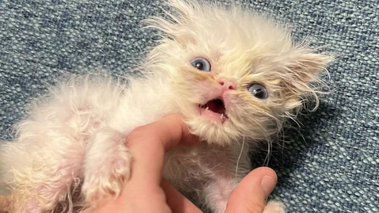

Meet Wisp, the ‘Scrungly’ Persian Kitten
Fact: Wisp has gained almost 800,000 followers and over 50 million likes on TikTok.
Rags to Riches Animal Rescue Inc. Received a sweet surprise after taking in a Persian cat, Gerald. On July 24th, 2023, RTRARI made a post on Instagram with the caption "Apparently Gerald has been keeping a big secret from us! We were told male and neutered well… that’s not the case" And little wisp was born!

What's
happening
The 3.5-month-old Persian
kitten from Tampa Bay has
taken over the internet with
her scroungy fur, clumsy gait
and sassy, soprano mews.
The intrigue
Maybe it's Amerosa's hilarious
video directing, taking viewers
through Wisp's bath time or
stitching together clips of her
more talkative moments.
The latest
Rags to Riches has peddled
the fame into Wisp-themed
T-shirt sales and fundraising
campaigns to benefit the
rescue, which Amerosa runs
with the help of a few
volunteers.